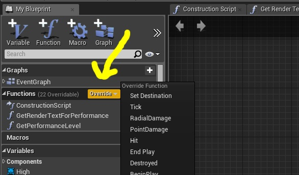
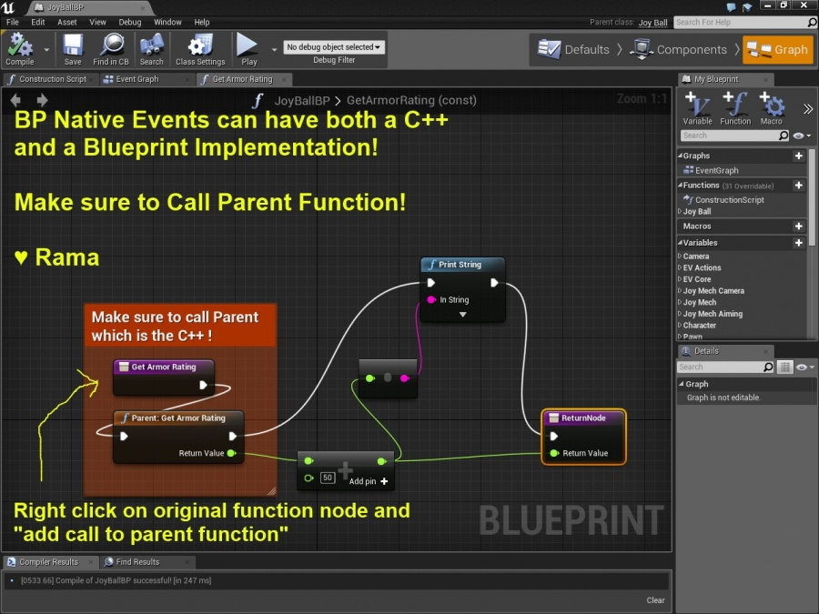

Blueprints, Empower Your Entire Team With BlueprintNativeEvents
Contents
Overview
Original Author: ( )
Dear Community,
BlueprintNativeEvents are distinct from because a BlueprintNativeEvent can have a C++ implementation!
A primary example is the GameMode class, which has many important BlueprintNativeEvents like
UFUNCTION(BlueprintNativeEvent, BlueprintCallable, Category="Game") APawn* SpawnDefaultPawnFor(AController* NewPlayer, class AActor* StartSpot);
and
UFUNCTION(BlueprintNativeEvent, BlueprintCallable, Category="Game")
class AActor* FindPlayerStart( AController* Player, const FString& IncomingName = TEXT("") );
These core functions that define how a UE4 game can even get started obviously need a C++ implementation, but what if a Blueprint-Only project wants to override this functionality?
Or what if you have BP-only teammates who want to override the functionality of your C++ functions?
This is where BlueprintNativeEvents shine!
.h
//Override in BP to extend the base C++ functionality!
UFUNCTION(BlueprintNativeEvent, BlueprintCallable, Category="JoyBall")
float GetArmorRating() const;
.cpp
float AJoyBall::GetArmorRating_Implementation() const
{
//remember to call super / parent function in BP!
V_LOG("C++ Happens First");
return 100;
}
_Implementation
Please duly note that you do not have to declare the function signature GetArmorRating_Implementation() in the .h file!
UE4 generates the declaration for you and you can simply write your cpp function body!
In The Editor

Click on Override to see a list of all overrideable BP Native events and add yours to your blueprint graph for your c++ class!

Adding Call To Parent Function
You must ensure that your teammates understand they have to right click on the function node and choose "Add Call To Parent Function" to cause your C++ implementation to run properly :) This is also essential if they are adding to output values that you calculate in C++
In my example above, what I see in the log is the correct value of 150!
100 comes from C++, and 50 gets added to that via call to parent function in BP !
Complete Override
Of course if you want to completely override behavior of C++ versions of BP Native Events, you would not call super in BP for that function :)
Overloaded Function not found...
If you are getting a strange compile error involving overloaded functions and you know the signatures match between .h and your _Implementation, then it means UE4 generated a function parameter list for the _Implementation that does not match what you supplied in the .h
For example:
void SetMenu(FString Title)
will be generated as
void SetMenu(const FString& Title)
and thus you will get a compile error until you change your .h to be:
void SetMenu(const FString& Title)
♥ Rama
Conclusion
Using BP Native Events you can offer your teammates powerful C++ tools that can be directly extended in blueprints!
Enjoy!
( )